Автор выложил продолжение крутого цикла статей:Как создать свой чит/трейнер
Оригинал:Чит своими руками. Меняем любые параметры в игре для Android
Сегодня мы с тобой напишем чит для шутера AssaultCube на Android. Но сначала заставим игру работать и в процессе изучим приемы декомпиляции и сборки APK, а также перенаправления трафика и подделки игрового сервера.
Давай для начала пробежимся по теории. Программы и игры для Android обычно пишут с применением следующих языков программирования и технологий:
- Java — традиционный и самый распространенный вариант. Код компилируется в байт‑код Java, затем в DEX для Dalvik/ART;
- Kotlin — современный язык от JetBrains, официально поддерживается Google с 2017 года. Совместим с Java, более лаконичный и безопасный;
- C/C++ — используются через Android NDK (Native Development Kit) для высокопроизводительных модулей, игр, библиотек;
- Dart (Flutter) — кросс‑платформенный фреймворк от Google;
- JavaScript/TypeScript — часто используются через React Native, Cordova;
- C# — можно использовать через Xamarin.
- AndroidManifest.<wbr>xml — манифест приложения, включает описание компонентов, разрешений, точек входа;
- classes.<wbr>dex — скомпилированный байт‑код Dalvik/ART (основной код приложения);
- resources.<wbr>arsc — скомпилированные ресурсы (строки, стили, атрибуты);
- res/ — прочие ресурсы (изображения, layout XML и другое);
- META-INF/ — метаданные, подписи APK;
- assets/ — произвольные файлы, доступные приложению в рантайме;
- lib/ — нативные библиотеки (соответствуют архитектурам: armeabi-v7a, arm64-v8a и так далее).
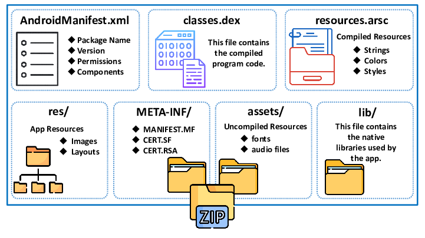
Настраиваем эмулятор
Все действия будем проводить в эмуляторе, а не на реальном устройстве, чтобы его случайно не окирпичить. Из всех эмуляторов мой выбор пал на AVD, который поставляется вместе с Android Studio. Устанавливаем и запускаем. Теперь создаем экземпляр устройства:
- Открываем Virtual Device Manager.
- Видим, что уже есть готовое устройство, и дублируем его.
- Убедимся, что у устройств выбран сервис Google Play Store.
- Запустим и проверим, что все у нас работает.
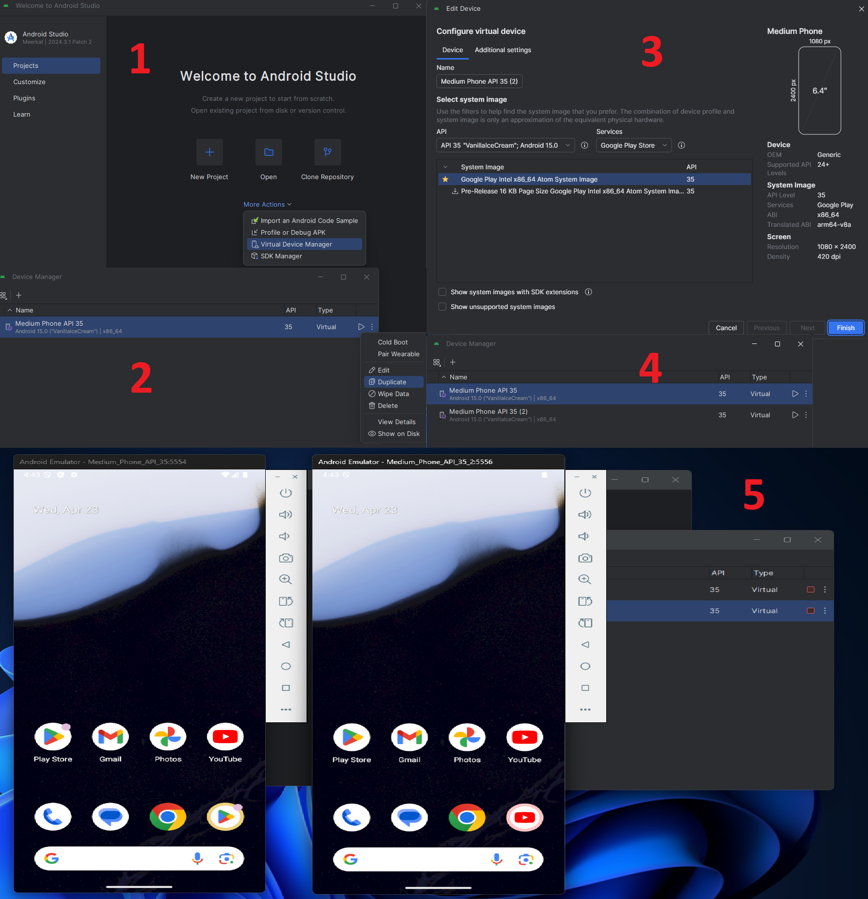
Ставим AssaultCube
Для начала загрузим игру AssaultCube, на которой мы будем упражняться. Ее нужно установить на оба устройства. Для этого открываем командную строку и переходим вот в этот каталог (там хранятся все утилиты):
Код:
%LOCALAPPDATA%\Android\Sdk\platform-tools
Код:
Выполняем команду adb devices, чтобы просмотреть список доступных эмуляторов.
Они будут представлены в формате <name>-<port> <type>, например emulator-5554 device.Теперь установим наш APK:
Код:
adb -s emulator-5554 install myapp.apkКак вариант, можно просто перетащить APK на эмулятор и подтвердить установку.
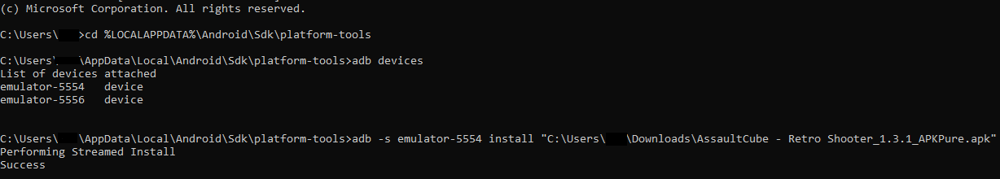
В какой‑то момент тебе может понадобиться удалить APK. Сделать это можно вот как. Сначала смотрим список установленных пакетов:
Код:
adb -s emulator-5554 shell pm list packages | sortЗатем удаляем ненужный:
Код:
adb -s <device-serial> shell pm uninstall <app-package-name>Например:
Код:
adb -s emulator-5554 shell pm uninstall net.cubers.assaultcube
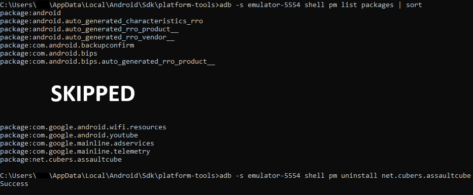
После того как мы установили AssaultCube, запустим ее и войдем в меню сетевой игры. Ничего не происходит? Я тоже столкнулся с этой проблемой, но потом нашел режим разработки.
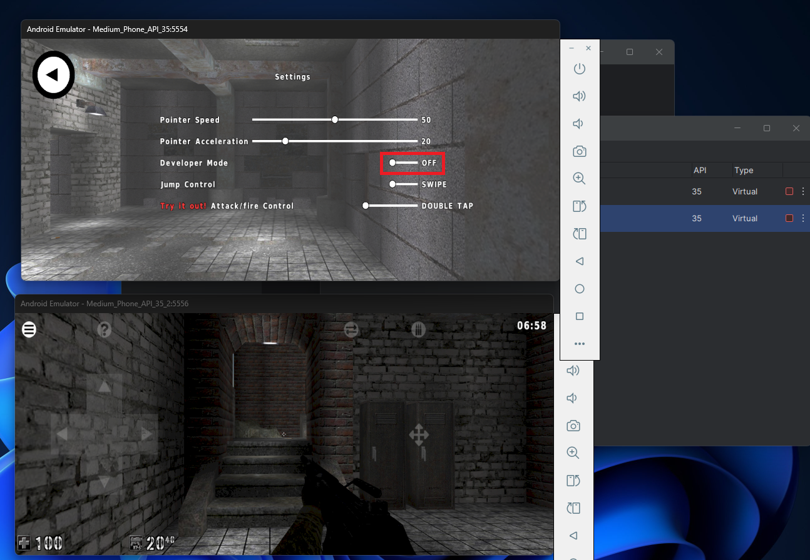
В нем проблема сразу видна: мы не можем подключиться к игровому серверу.
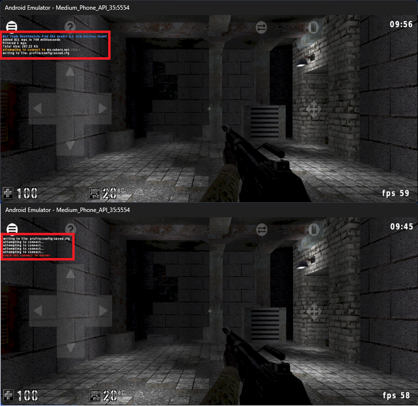
Перенаправляем трафик на локальный сервер
Видимо, игровые серверы мертвы. Но мы можем перенаправить подключение на локальный сервер. Настройку и запуск сервера я описывал во второй статье серии:Как создать свой чит/трейнер - 2 | Цикл статей. Как создать свой чит/трейнер.
Есть два способа перенаправить трафик на локальный сервер. Первый — это патчинг APK с заменой старых адресов нашим локальным; второй — перенаправление трафика APK.
Для начала разберем первый подход. Нам потребуется jadx — декомпилятор APK. Открываем в нем нашу игру и, немного покопавшись в декомпилированном коде, находим файл server.cfg с адресами и портами всех игровых серверов.
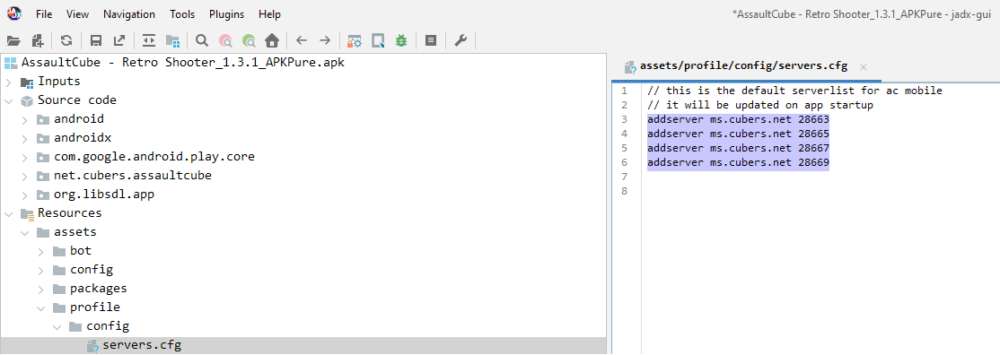
Скажу сразу: если мы поменяем адреса на 127.0.0.1, ничего работать не будет. В документации написано следующее:
То есть адрес нашего локального сервера будет 10.0.2.2.
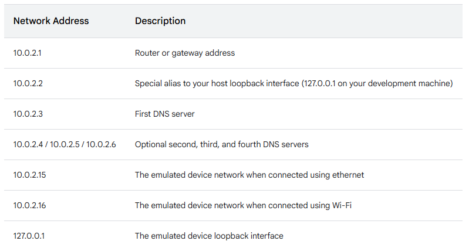
Для непосредственно патчинга APK воспользуемся APK Tool GUI — это GUI-надстройка для инструмента Apktool, которая используется для декомпиляции, модификации и повторной сборки APK-файлов. Чтобы пропатчить наш APK, выполним следующие действия:
- выберем и декомпилируем целевой APK (после должна появиться папка с названием APK);
- откроем файл \assets\profile\config\servers.cfg и поменяем в нем адреса;
- скомпилируем все изменения в новый APK (указываем путь до папки).
После повторной установки пропатченного APK заходим в раздел сетевой игры и снова видим попытку подключиться по старому адресу.
А все дело в том, что каждый раз при запуске игры она запрашивает список игровых серверов у мастер‑сервера и записывает его в \assets\profile\config\servers.cfg, а при запуске сетевой игры уже непосредственно берет их из servers.cfg.
То есть файл перезаписывается каждый раз при запуске, и наш патч не имеет смысла. Поэтому мы попробуем воспользоваться вторым методом и перенаправить трафик.
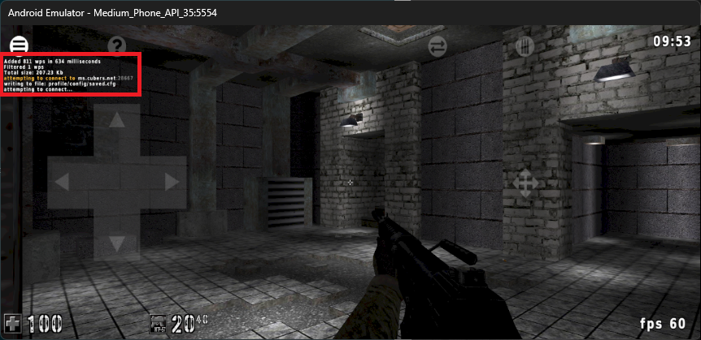
Рутуем устройство
Прежде чем настраивать перенаправление трафика, нам нужно рутануть наше виртуальное устройство. Для этого используем скрипт rootAVD. При рутинге оставь только целевой эмулятор, иначе ничего не получится.
Добавляем Android SDK в переменные окружения:
Код:
set PATH=%LOCALAPPDATA%\Android\Sdk\platform-tools;%PATH%Запускаем скрипт с параметром ListAllAVDs, который показывает список всех виртуальных устройств:
Код:
rootAVD.bat ListAllAVDsЗапускаем скрипт, в параметре которого указываем образ для рутования:
Код:
rootAVD.bat system-images\android-35\google_apis_playstore\x86_64\ramdisk.imgО том, что все прошло успешно, будет говорить установленное приложение Magisk.
Теперь ставим модуль Always Trust User Certs — он нам понадобится при перехвате трафика. Запускай Magisk и переходи в раздел Modules. Загруженный Always Trust User Certs перенеси в эмулятор и жми Install from storage. Модуль отобразится в списке, если он успешно установлен.
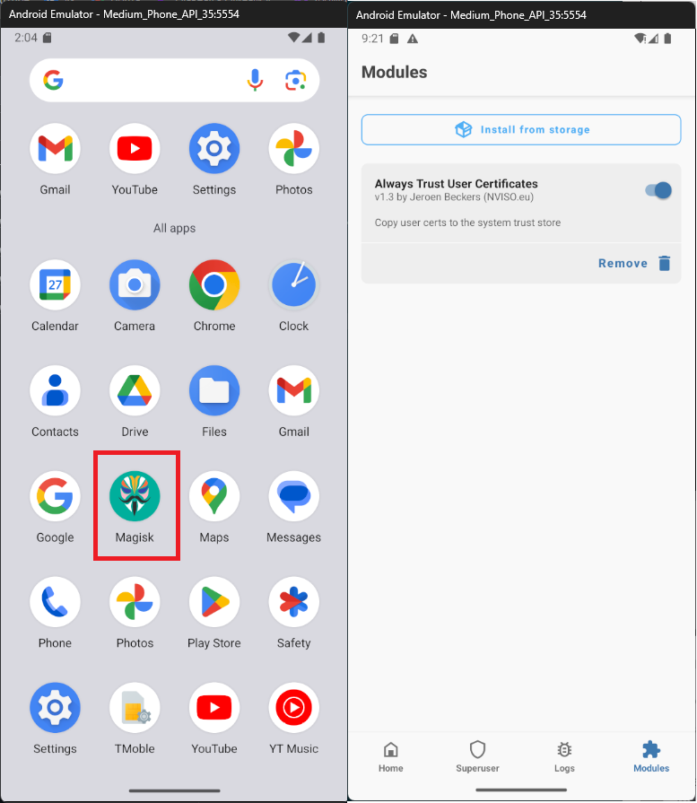
Перенаправляем трафик через Burp Suite
Перенаправлять трафик мы будем через Burp Suite — это набор инструментов для тестирования безопасности веб‑приложений. Сначала нам понадобится настроить прокси, чтобы трафик проходил через Burp.
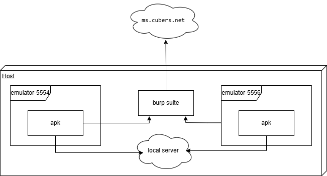
Пункт с сертификатом можно пропустить, так как он находится в модуле Always Trust User Certs для Magisk и уже установлен на устройстве. Первым делом узнаем адрес и порт прокси‑сервера — 127.0.0.1:8080.
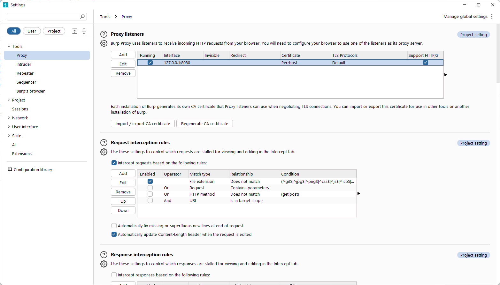
В эмуляторе в настройках сети прописываем прокси с адресом 10.0.2.2 (потому что localhost) и портом 8080.
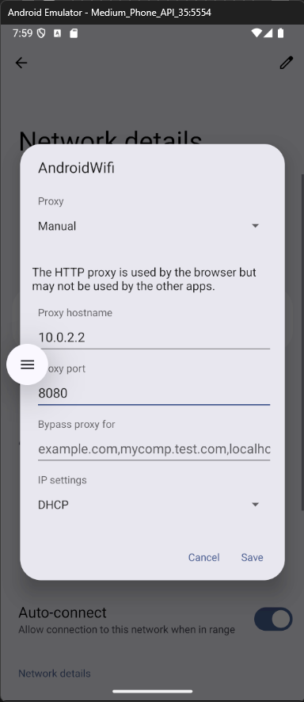
На примере запроса к мастер‑серверу убедимся, что перехватчик включен и работает.
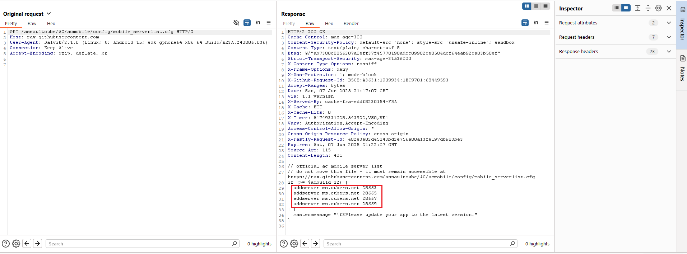
Перейдем на вкладку Match and Replace и создадим правила. Жми Add и прописывай замену адресов и портов в теле ответа от мастер‑сервера нашим локальным адресом и портом, который используется по умолчанию на нашем локальном игровом сервере, — 28763.
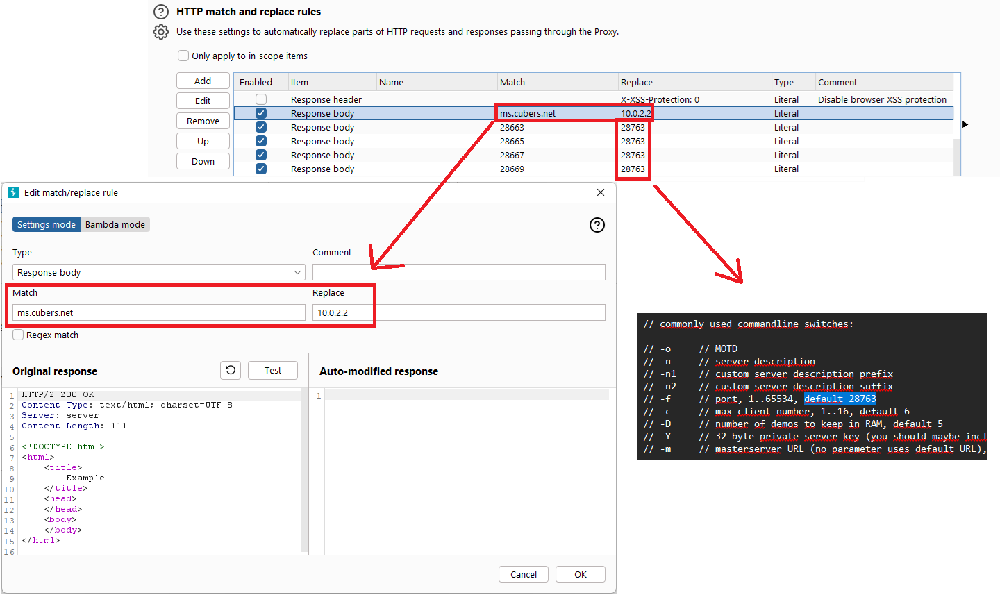
Теперь игра пытается подключиться к нашему серверу, но соединение установить не может.
По логам сервера суть ошибки тоже не понять. Что могло пойти не так? Вероятно, клиент у нас для Android, а сервер обслуживает только версию игры для Windows. Решение этой проблемы выходит за рамки нашего плана, так что просто идем дальше — сделаем чит для игры.
Пишем чит
В прошлой статье мы уже убедились, что в версии игры для Windows одиночный режим и мультиплеер работают одинаково, да и реверс версии для Android подтвердил этот факт. Так что отсутствие сервера нас ни в чем не ограничит.
Искать мы сегодня будем статический адрес игрока, его имя, а также адрес функции получения урона, чтобы в дальнейшем этот урон для нас отключить.
Ищем значения
Изучая декомпилированный код, можно заметить, что он довольно маленький и в нем нет игровой логики. В угоду производительности вся она реализована через нативную библиотеку \lib\x86_64\libmain.so. Она загружается и работает в контексте нашего APK.
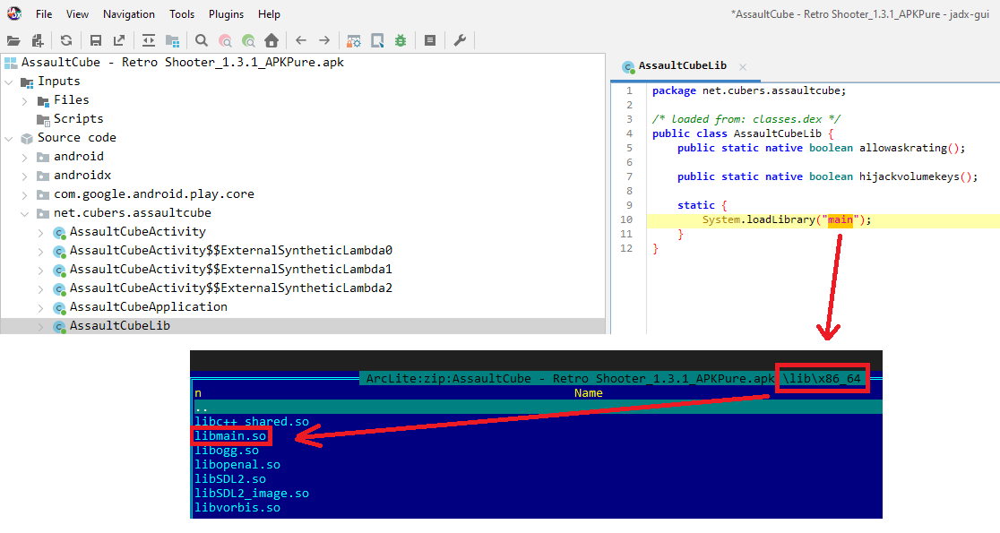
Открываем нашу библиотеку в IDA Pro и видим, что нам улыбнулась удача: все символы сохранены, отладочная информация — тоже. Это сэкономит нам кучу времени на поиске.
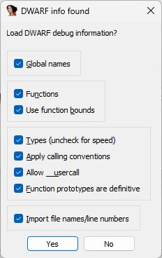
Немного полистав список функций, находим процедуру получения урона под названием dodamage с адресом 0x9BE40. Она принимает шесть аргументов, первые три из которых нам и нужны:
- урон;
- игрок, получающий урон;
- игрок, наносящий урон.
Также мы видим, что эта функция использует статический указатель на нашего игрока (0x32DF98). Это нужно на случай, если игрок, получающий урон, — это мы. Тогда игра должна обновить наш уровень здоровья, а также воспроизвести звуковые эффекты.
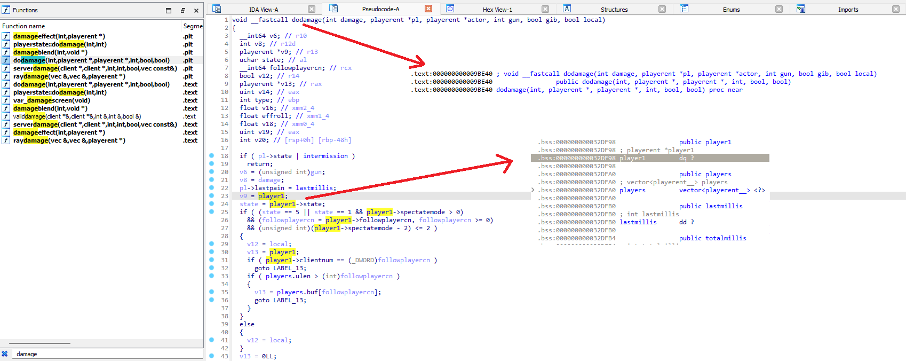
Последнее, что нам понадобится, — это смещение 0x241 до имени игрока в структуре playerent. Оно нужно для того, чтобы выводить, кто сколько получает урона.
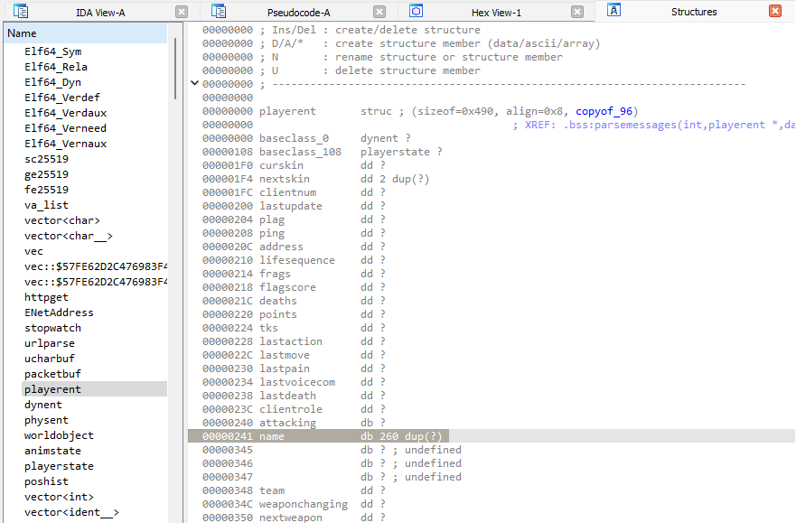
Frida — тулкит для динамической инструментации
Чтобы запускать чит, нам понадобится Frida — инструмент для динамического внедрения и исполнения кода внутри работающих приложений, который помогает исследовать и модифицировать их поведение на лету.
Установить клиентскую часть Frida можно командой pip install frida-tools. Для серверной части Frida, которая будет работать в эмуляторе и общаться с клиентской частью, нам нужно узнать архитектуру эмулируемого устройства и скачать соответствующую сборку frida-server.
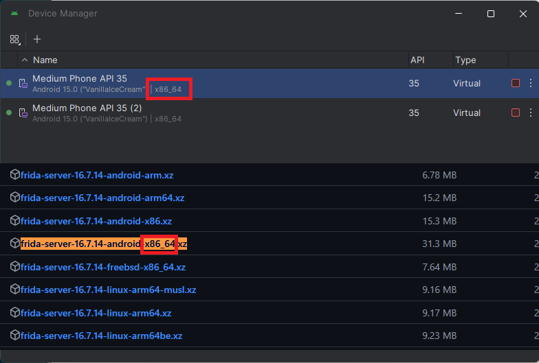
Теперь надо установить frida-server на рутованное устройство, без рута мы этого сделать не сможем. Устанавливаем следующими командами.
Загружаем frida-server на устройство:
Код:
adb push frida-server-16.7.14-android-x86_64 /data/local/tmp/frida-serverОткрываем командную оболочку:
Код:
adb shellПереключаемся на суперпользователя:
Код:
suОтключаем ограничения безопасности:
Код:
setenforce 0Даем права на запуск:
Код:
chmod 775 /data/local/tmp/frida-serverЗапускаем frida-server для работы с Frida:
Код:
/data/local/tmp/frida-server &Стоит упомянуть, что у Frida очень хорошая документация. А также существует Frida Code Share — онлайн‑сервис, связанный с Frida, который позволяет пользователям хранить, просматривать и использовать скрипты Frida и делиться ими.
Отключаем урон
После того как мы нашли все нужные нам значения, а также установили Frida и frida-server, создаем файл cheat_ac.js и пишем код чита, который отключает урон для нашего игрока.
JavaScript:
// Java.perform ставит нашу функцию в очередь и запускает ее именно тогда, когда Java-окружение готово
Java.perform(function () {
// Получение базового адреса библиотеки
var base = Module.findBaseAddress("libmain.so");
if (base) {
console.log("found base");
}
else {
console.log("couldn't find base");
}
try {
// Перехват вызова нативной функции dodamage
var interceptor = Interceptor.attach(base.add(0x9BE40), {
onEnter: function (args) {
// Получение указателя на нашего игрока
var player_rva = ptr(0x32DF98);
var player_ptr = base.add(player_rva);
var player = Memory.readPointer(player_ptr);
// Имя того, кто получает урон, и имя того, кто его наносит
var name_rva = ptr(0x241);
var name_ptr_pl = args[1].add(name_rva);
var name_pl = Memory.readUtf8String(name_ptr_pl);
var name_ptr_actor = args[2].add(name_rva);
var name_actor = Memory.readUtf8String(name_ptr_actor);
// Сравнение с тем, кто получает урон: если это наш игрок, то урона мы не получим
if (player.toInt32() === args[1].toInt32()) {
args[0] = ptr(0);
console.log(name_pl, "got damage", args[0].toInt32(), "from", name_actor, "but got 0 damage")
} else {
console.log(name_pl, "got damage", args[0].toInt32(), "from", name_actor);
}
}
});
} catch(error) {
console.error("error attaching")
}
});Проверяем
Запускаем наш чит через командную строку следующей командой:
Код:
frida -D emulator-5554 -n AssaultCube -l cheat_ac.jsВот что значит каждый из параметров:
- -D — подключиться к устройству с заданным идентификатором;
- -n — подключиться к процессу с заданным именем;
- -l — загрузить переданный скрипт.
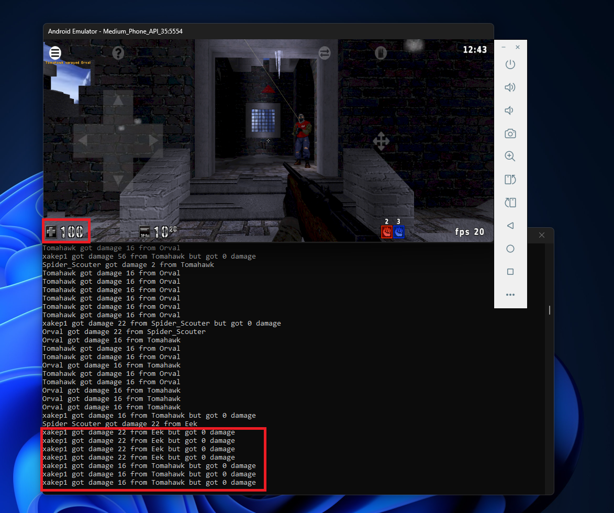
Выводы
Итак, мы изучили, из чего состоят приложения для Android, научились настраивать эмулятор, патчить APK, рутовать устройство и перенаправлять трафик.
Затем познакомились с Frida, научились ее применять и написали чит, который отключает получение урона игроком.

 MA Code Execution – Lystic's Blog
При использовании устройства DMA атакующий...
MA Code Execution – Lystic's Blog
При использовании устройства DMA атакующий...